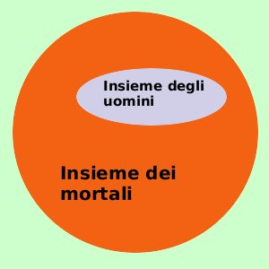
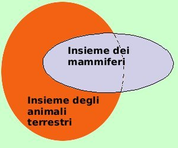

|
Dimostriamo che, mediante la teoria degli insiemi, e' possibile mostrare la verita' o meno del giudizio universale affermativo: Partiamo dal nostro giudizio: Per ogni uomo x, se x e' un uomo allora x e' mortale  Considero gli insiemi P(x) = { x : x e' un uomo } Q(x) = { x : x e' mortale } la scrittura implica che l'insieme P(x) e' contenuto nell'insieme Q(x) quindi e' vera solamente se la relazione di inclusione e' valida P(x) se invece avessi il giudizio: Tutti i mammiferi sono animali terrestri evidentemente e' un giudizio falso perche' i delfini, le orche e le balene sono mammiferi ma sono marini e non terrestri. Partiamo dal nostro giudizio: Per ogni x, se x e' un mammifero allora x e' animale terrestre  Considero gli insiemi P(x) = { x : x e' un mammifero } Q(x) = { x : x e' animale terrestre } la scrittura implica che l'insieme P(x) e' contenuto nell'insieme Q(x) quindi non e' vera perche' la relazione di inclusione non e' valida P(x) |